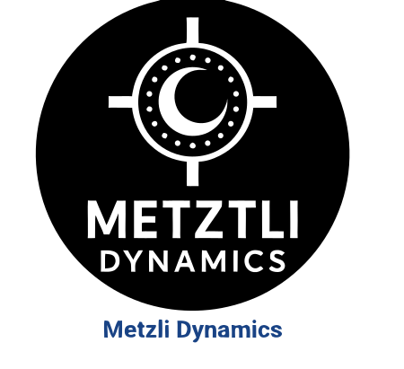
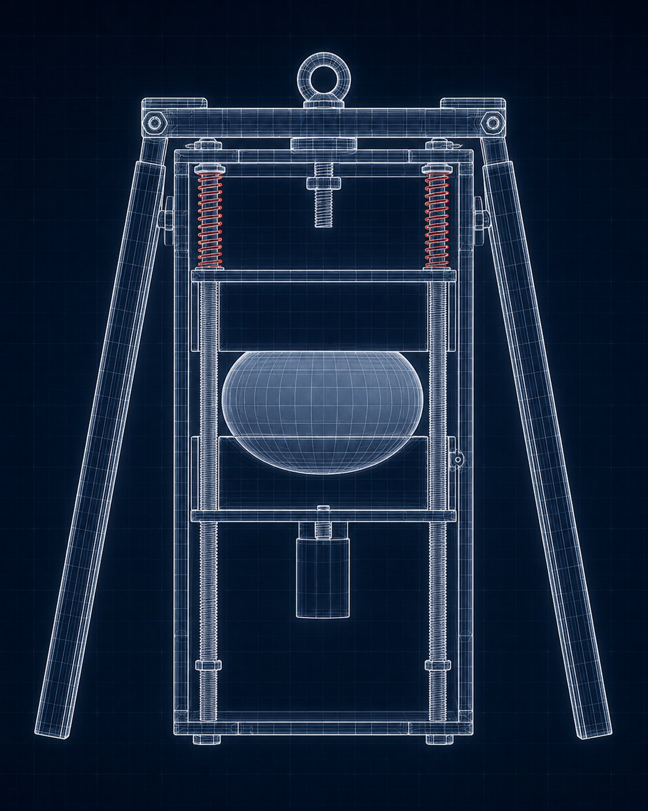
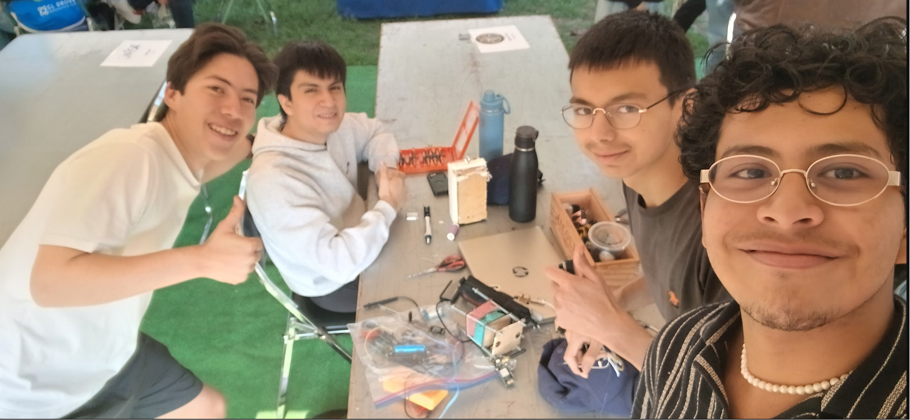
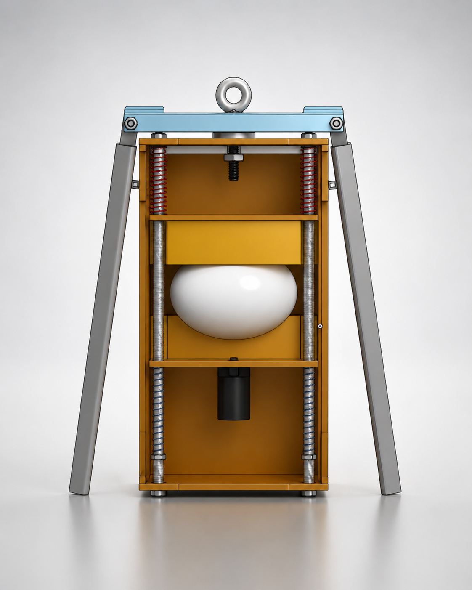
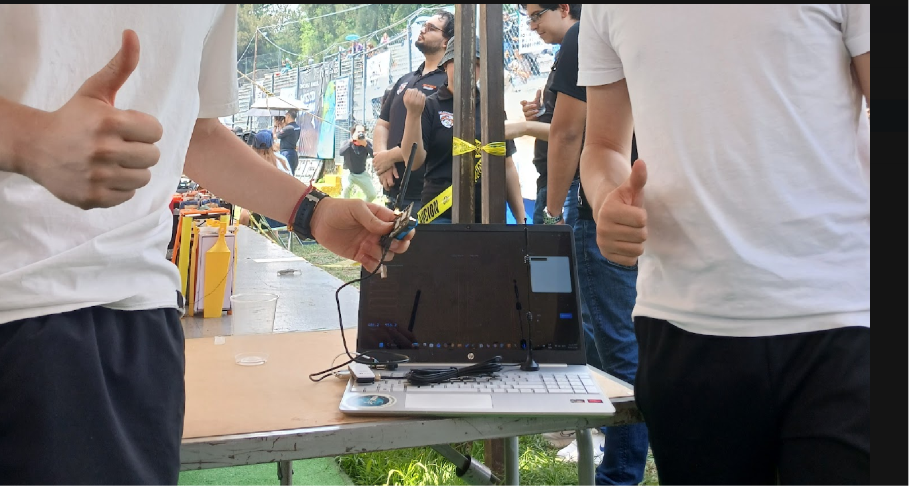
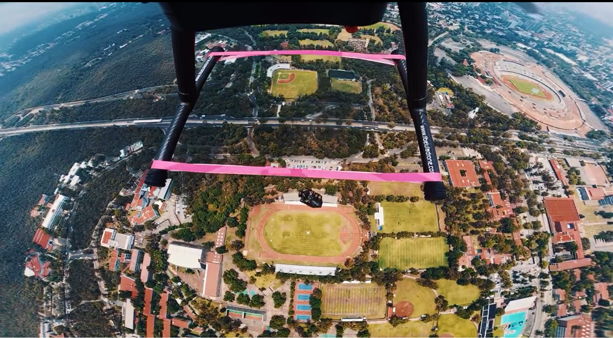
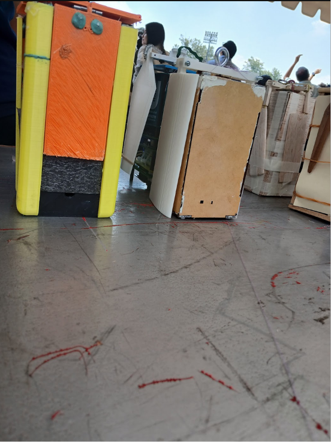
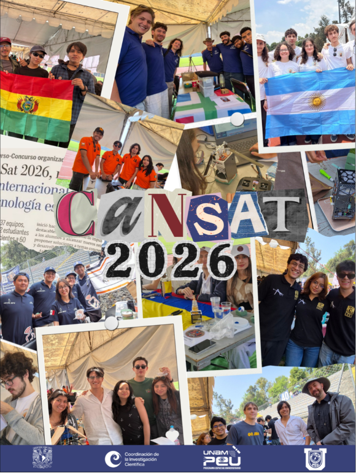
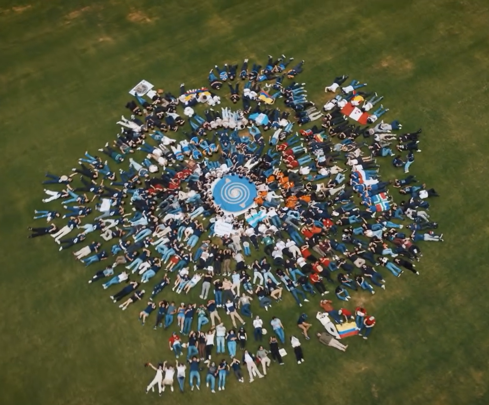

Diseñamos
Modelamos fuselajes, carcasas y mecanismos para proteger el CanSat durante pruebas, despliegue y recuperacion.

Club Aeroespacial LFMCanSat / Diseño / Exploracion
Somos el Club Aeroespacial LFM: un equipo escolar que diseña, programa y prueba un CanSat para aprender ingenieria real, compitiendo en el Mundial de CanSats, una competencia internacional universitaria.
Que hacemos
Modelamos fuselajes, carcasas y mecanismos para proteger el CanSat durante pruebas, despliegue y recuperacion.
Integramos sensores, telemetria y registro de datos para convertir cada prueba en aprendizaje medible.
Iteramos con prototipos, simulaciones, caidas controladas y revisiones tecnicas antes de competir.

Render CAD del prototipo y su estructura interna.
Nuestro CanSat
El CanSat concentra en el tamano de una lata los retos de una mision aeroespacial: estructura ligera, sensores, energia, comunicaciones, software embarcado y recuperacion.
Mundial de CanSats
Equipos estudiantiles reciben una mision y convierten requisitos tecnicos en arquitectura.
Se documentan CAD, electronica, software, pruebas, presupuesto y gestion de riesgos.
El prototipo se fabrica, se calibra y se somete a revisiones antes del evento.
El CanSat ejecuta su mision, transmite datos y demuestra que el sistema resiste condiciones reales.
El equipo defiende resultados, decisiones de ingenieria y aprendizajes frente a jueces.
Fotos y proyecto







Unete al equipo
Pasa al club con ganas de aprender. No necesitas saberlo todo: necesitas curiosidad, constancia y ganas de construir algo que pueda volar.